Rigid Rectangles in Squares
The following pictures show the fewest possible rigid rectangles (no rectangle can slide in any direction) packed inside squares of side n.
2 x 1 Rectangles
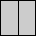
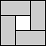
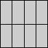
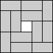
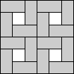
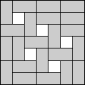
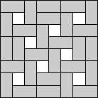
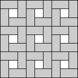
3 x 1 Rectangles
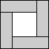
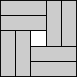
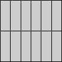
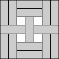
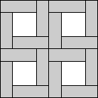
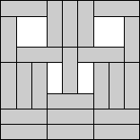
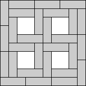
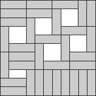
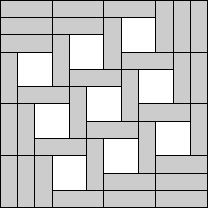
4 x 1 Rectangles
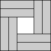
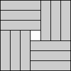
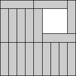
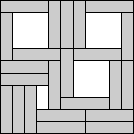
3 x 2 Rectangles
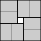
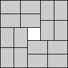
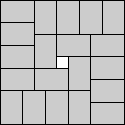
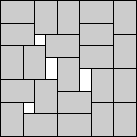
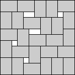
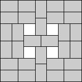
5 x 2 Rectangles
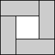
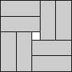
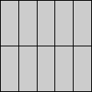
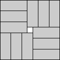
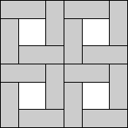
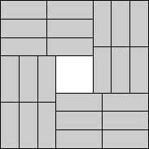
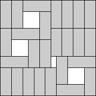
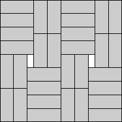
4 x 3 Rectangles
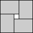
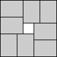
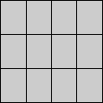
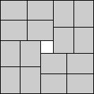
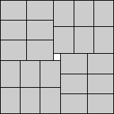
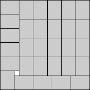
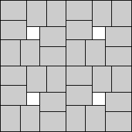
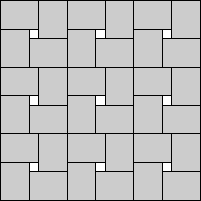
Torsten Sillke
has some more information.